01 / OVERVIEW派系概览
掠夺、怪物狩猎与诸神恩赐。 推荐首发领主：沃尔弗里克。怪物狩猎：挑战传奇巨兽获得奖励；诸神恩赐选择混沌神。
毁灭 · 近战 / 巨兽
怪物狩猎：挑战传奇巨兽获得奖励；诸神恩赐选择混沌神。
为什么玩它
巨兽与掠夺玩法直接，适合喜欢北方蛮族。
要注意什么
经济和远程弱，四面受敌。
沿海掠夺养经济，猎杀怪物拿增益；用猛犸 / 巨魔冲阵。
本页数值为 Patch 9.0.4 / Ultra 规模 / 0 级，不含科技、技能、装备、领主光环与战场增益。维护费是战役基础值，受难度、补给线与派系减免影响。中文兵种名为社区习惯译名，以游戏内简中为准。
02 / RECOMMENDED推荐兵种
每个派系挑 6 个最值得先练、先招、先知道的名字。不是“唯一答案”，但能覆盖扛线、输出、机动和攻城。
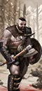
便宜。
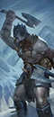
便宜远程。
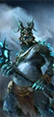
高输出。
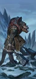
高护甲。
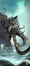
高血量。
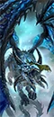
强力单体。
03 / ROSTER完整兵种表
按类别展开。T 是招募等级；兵模是单位里的模型数；远程 / 射程一栏，前者是每 10 秒全队伤害，后者是射程。名将团单独列在最后。
← 左右滑动查看完整数值 →
领主与传奇领主7 个单位
| 兵种 | T | 兵模 | 生命 | 护甲 | 领导 | 速度 | 近攻 | 近防 | 武器 | 远程 / 射程 | 维护 |
|---|---|---|---|---|---|---|---|---|---|---|---|
Great Shaman-Sorcerer (Death)Wizard |
— | 1 | 3,660 | 35 | 70 | 35 | 35 | 35 | 345 | — | 250 |
Great Shaman-Sorcerer (Fire)Wizard |
— | 1 | 3,660 | 35 | 70 | 35 | 35 | 35 | 345 | — | 250 |
Great Shaman-Sorcerer (Metal)Wizard |
— | 1 | 3,660 | 35 | 70 | 35 | 35 | 35 | 345 | — | 250 |
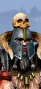 Marauder ChieftainLord |
— | 1 | 4,268 | 50 | 70 | 35 | 60 | 40 | 450 | — | 200 |
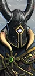 Sayl the FaithlessWizard Lord |
— | 1 | 4,030 | 30 | 75 | 33 | 43 | 36 | 380 | — | 250 |
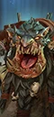 ThroggLord |
— | 1 | 8,008 | 55 | 70 | 56 | 60 | 50 | 495 | — | 400 |
Wulfrik the WandererLord |
— | 1 | 4,840 | 100 | 75 | 35 | 70 | 50 | 490 | — | 275 |
英雄11 个单位
| 兵种 | T | 兵模 | 生命 | 护甲 | 领导 | 速度 | 近攻 | 近防 | 武器 | 远程 / 射程 | 维护 |
|---|---|---|---|---|---|---|---|---|---|---|---|
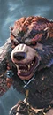 Beorg BearstruckMelee Specialist |
— | 1 | 6,170 | 90 | 80 | 56 | 40 | 53 | 450 | — | — |
Fimir Balefiend (Fire)Wizard |
— | 1 | 5,040 | 65 | 70 | 54 | 35 | 35 | 400 | — | 188 |
Fimir Balefiend (Shadows)Wizard |
— | 1 | 5,040 | 65 | 70 | 54 | 35 | 35 | 400 | — | 188 |
Fimir NobleMelee Specialist |
— | 1 | 5,440 | 110 | 70 | 50 | 52 | 30 | 450 | — | 237 |
 Gutrot SpumeMelee Specialist |
— | 1 | 5,970 | 90 | 85 | 32 | 50 | 48 | 430 | — | — |
 Scyla AnfingrimmMonster |
— | 1 | 7,270 | 50 | 80 | 65 | 52 | 30 | 550 | — | — |
Shaman-Sorcerer (Death)Wizard |
— | 1 | 3,360 | 30 | 60 | 35 | 30 | 30 | 315 | — | 275 |
Shaman-Sorcerer (Fire)Wizard |
— | 1 | 3,360 | 30 | 60 | 35 | 30 | 30 | 315 | — | 275 |
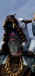 Shaman-Sorcerer (Metal)Wizard |
— | 1 | 3,360 | 30 | 60 | 35 | 30 | 30 | 315 | — | 275 |
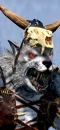 Skin Wolf WerekinMelee Specialist |
— | 1 | 5,040 | 70 | 70 | 75 | 45 | 32 | 420 | — | 275 |
Styrkaar of the SortsvinaerMelee Specialist |
— | 1 | 4,688 | 80 | 80 | 42 | 45 | 60 | 500 | — | — |
近战步兵11 个单位
| 兵种 | T | 兵模 | 生命 | 护甲 | 领导 | 速度 | 近攻 | 近防 | 武器 | 远程 / 射程 | 维护 |
|---|---|---|---|---|---|---|---|---|---|---|---|
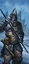 Marauder SpearmenSpear Infantry |
T1 | 120 | 9,360 | 15 | 60 | 35 | 25 | 37 | 25 | — | 113 |
MaraudersAxe Infantry |
T1 | 120 | 9,360 | 15 | 60 | 35 | 34 | 28 | 28 | — | 100 |
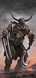 FlayerkinMelee Infantry |
T2 | 90 | 8,460 | 15 | 65 | 39 | 35 | 28 | 42 | — | 157 |
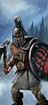 Marauder BearmenAxe Infantry |
T2 | 100 | 11,200 | 45 | 65 | 31 | 32 | 35 | 30 | — | 144 |
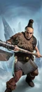 Marauder Bearmen (Great Weapons)Great Axe Infantry |
T2 | 100 | 11,200 | 45 | 65 | 31 | 32 | 29 | 33 | — | 163 |
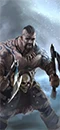 Marauder BerserkersDual Axe Infantry |
T2 | 100 | 10,200 | 15 | 80 | 40 | 40 | 24 | 52 | — | 188 |
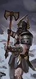 Marauders (Great Weapons)Great Axe Infantry |
T2 | 120 | 9,360 | 15 | 60 | 35 | 34 | 20 | 30 | — | 119 |
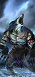 Skin WolvesMonstrous Infantry |
T2 | 24 | 7,416 | 15 | 60 | 75 | 32 | 28 | 60 | — | 238 |
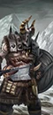 Marauder ChampionsAxe Infantry |
T3 | 100 | 9,600 | 80 | 75 | 35 | 35 | 53 | 46 | — | 250 |
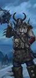 Marauder Champions (Great Weapons)Hammer Infantry |
T3 | 100 | 9,600 | 80 | 75 | 35 | 35 | 40 | 50 | — | 275 |
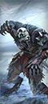 Skin Wolves (Armoured)Monstrous Infantry |
T3 | 24 | 7,416 | 70 | 60 | 65 | 32 | 28 | 60 | — | 275 |
远程步兵2 个单位
| 兵种 | T | 兵模 | 生命 | 护甲 | 领导 | 速度 | 近攻 | 近防 | 武器 | 远程 / 射程 | 维护 |
|---|---|---|---|---|---|---|---|---|---|---|---|
Marauder HuntersClose-Quarters Infantry |
T2 | 90 | 6,030 | 15 | 50 | 35 | 36 | 20 | 28 | 35 / 80m | 138 |
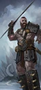 Marauder Hunters (Javelins)Javelin Infantry |
T2 | 90 | 6,030 | 15 | 50 | 35 | 26 | 22 | 28 | 31 / 90m | 138 |
怪步 / 飞行步兵4 个单位
| 兵种 | T | 兵模 | 生命 | 护甲 | 领导 | 速度 | 近攻 | 近防 | 武器 | 远程 / 射程 | 维护 |
|---|---|---|---|---|---|---|---|---|---|---|---|
Norscan Ice TrollsMonstrous Infantry |
T2 | 16 | 7,904 | 60 | 45 | 54 | 38 | 32 | 120 | — | 238 |
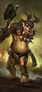 Norscan TrollsMonstrous Infantry |
T2 | 16 | 7,904 | 40 | 45 | 54 | 34 | 32 | 100 | — | 200 |
Fimir WarriorsMonstrous Infantry |
T3 | 16 | 8,224 | 110 | 70 | 45 | 30 | 42 | 100 | — | 300 |
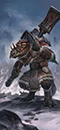 Fimir Warriors (Great Weapons)Monstrous Infantry |
T3 | 16 | 8,224 | 110 | 70 | 45 | 30 | 32 | 100 | — | 325 |
近战骑兵3 个单位
| 兵种 | T | 兵模 | 生命 | 护甲 | 领导 | 速度 | 近攻 | 近防 | 武器 | 远程 / 射程 | 维护 |
|---|---|---|---|---|---|---|---|---|---|---|---|
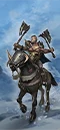 Kurgan Horsemen (Dual Weapons)Cavalry |
T2 | 60 | 5,880 | 15 | 55 | 90 | 29 | 29 | 37 | — | 175 |
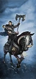 Kurgan Horsemen (Great Weapons)Cavalry |
T2 | 60 | 5,880 | 15 | 55 | 90 | 29 | 24 | 42 | — | 187 |
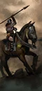 Marauder HorsemenMissile Cavalry |
T2 | 60 | 5,460 | 15 | 48 | 90 | 22 | 20 | 24 | 24 / 80m | 150 |
远程骑兵2 个单位
| 兵种 | T | 兵模 | 生命 | 护甲 | 领导 | 速度 | 近攻 | 近防 | 武器 | 远程 / 射程 | 维护 |
|---|---|---|---|---|---|---|---|---|---|---|---|
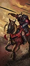 Marauder HorsemastersMissile Cavalry |
T2 | 60 | 5,880 | 50 | 54 | 90 | 26 | 26 | 28 | 33 / 90m | 213 |
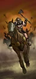 Marauder Horsemen (Throwing Axes)Missile Cavalry |
T2 | 60 | 5,460 | 15 | 48 | 90 | 22 | 26 | 24 | 27 / 70m | 156 |
战车1 个单位
| 兵种 | T | 兵模 | 生命 | 护甲 | 领导 | 速度 | 近攻 | 近防 | 武器 | 远程 / 射程 | 维护 |
|---|---|---|---|---|---|---|---|---|---|---|---|
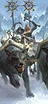 Marauder Ice Wolf ChariotsMissile Chariot |
T2 | 4 | 6,112 | 90 | 70 | 95 | 34 | 32 | 75 | 104 / 70m | 263 |
战兽3 个单位
| 兵种 | T | 兵模 | 生命 | 护甲 | 领导 | 速度 | 近攻 | 近防 | 武器 | 远程 / 射程 | 维护 |
|---|---|---|---|---|---|---|---|---|---|---|---|
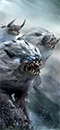 Norscan WarhoundsWar Beasts |
T1 | 80 | 6,080 | 15 | 38 | 95 | 26 | 17 | 22 | — | 100 |
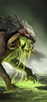 Norscan Warhounds (Poison)War Beasts |
T1 | 80 | 6,080 | 15 | 38 | 95 | 26 | 17 | 22 | — | 113 |
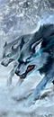 Norscan Ice WolvesWar Beasts |
T2 | 48 | 6,864 | 15 | 45 | 95 | 30 | 21 | 48 | — | 156 |
巨兽10 个单位
| 兵种 | T | 兵模 | 生命 | 护甲 | 领导 | 速度 | 近攻 | 近防 | 武器 | 远程 / 射程 | 维护 |
|---|---|---|---|---|---|---|---|---|---|---|---|
 Feral ManticoreFlying Monster |
T2 | 1 | 5,103 | 45 | 56 | 85 | 40 | 34 | 445 | — | 200 |
Dread MawMonster |
T3 | 1 | 9,640 | 80 | 65 | 50 | 65 | 33 | 400 | 150 / 200m | 300 |
Chaos Frost DragonFlying Monster |
T4 | 1 | 7,120 | 70 | 70 | 90 | 45 | 41 | 495 | — | 375 |
 ChimeraFlying Monster |
T4 | 1 | 6,390 | 80 | 60 | 85 | 52 | 38 | 520 | — | 375 |
Curs'd EttinMonster |
T4 | 1 | 14,320 | 35 | 100 | 39 | 65 | 40 | 650 | — | 375 |
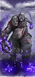 Curs'd Ettin (Runecaller)Monster |
T4 | 1 | 11,820 | 35 | 100 | 39 | 60 | 35 | 550 | — | 400 |
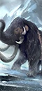 Feral MammothWar Mammoth |
T4 | 1 | 12,988 | 50 | 60 | 56 | 30 | 28 | 525 | — | 362 |
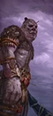 Norscan GiantMonster |
T4 | 1 | 12,620 | 50 | 100 | 39 | 65 | 30 | 700 | — | 375 |
War MammothWar Mammoth |
T5 | 1 | 14,144 | 80 | 65 | 56 | 34 | 30 | 525 | — | 475 |
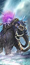 War Mammoth (Warshrine)War Mammoth |
T5 | 1 | 14,144 | 80 | 65 | 56 | 34 | 30 | 525 | — | 475 |
名将团11 个单位
| 兵种 | T | 兵模 | 生命 | 护甲 | 领导 | 速度 | 近攻 | 近防 | 武器 | 远程 / 射程 | 维护 |
|---|---|---|---|---|---|---|---|---|---|---|---|
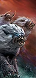 Beasts of Tashnar (Norscan Warhounds)War Beasts · Renown |
T2 | 80 | 6,080 | 15 | 48 | 95 | 36 | 23 | 22 | — | 150 |
 Followers of the Great Eagle (Marauder Chariots)Chariot · Renown |
T2 | 4 | 5,632 | 90 | 80 | 78 | 29 | 36 | 40 | — | 250 |
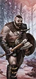 Icehorn Marauders (Marauders)Axe Infantry · Renown |
T2 | 120 | 9,360 | 15 | 70 | 35 | 43 | 36 | 28 | — | 150 |
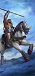 Riders of the Mighty Serpent (Marauder Horsemen)Missile Cavalry · Renown |
T2 | 60 | 5,460 | 15 | 58 | 95 | 29 | 27 | 24 | 24 / 80m | 225 |
 Worshippers of the Crow (Marauders – Great Weapons)Great Axe Infantry · Renown |
T2 | 120 | 10,200 | 15 | 70 | 35 | 38 | 32 | 30 | — | 163 |
 Brutes of the Hound (Marauder Berserkers)Dual Axe Infantry · Renown |
T3 | 100 | 10,200 | 35 | 100 | 40 | 50 | 26 | 52 | — | 250 |
 Bloodshriek Chimera (Chimera)Flying Monster · Renown |
T4 | 1 | 6,390 | 80 | 70 | 85 | 64 | 48 | 520 | — | 475 |
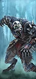 Maws of Savagery (Skin Wolves – Armoured)Monstrous Infantry · Renown |
T4 | 24 | 7,416 | 70 | 70 | 65 | 41 | 36 | 60 | — | 375 |
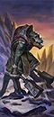 Mist Stalkers (Fimir Warriors)Monstrous Infantry · Renown |
T4 | 16 | 8,224 | 110 | 80 | 45 | 38 | 52 | 100 | — | 362 |
 The Cold-Voider (Chaos Frost Dragon)Flying Monster · Renown |
T4 | 1 | 7,120 | 70 | 80 | 90 | 56 | 51 | 495 | — | 450 |
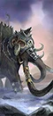 Soulcrusher (War Mammoth)War Mammoth · Renown |
T5 | 1 | 14,144 | 80 | 75 | 56 | 43 | 38 | 525 | — | 575 |
已排除“扩展名册（extended roster）”单位。数值为 Patch 9.0.4；不同版本可能微调。
04 / ARMY BUILD配兵思路
先按角色填槽，再按对手换兵。下面是一个通用的 20 槽骨架，以及用本页推荐兵种拼出的示例。
| 角色 | 建议槽位 | 说明 |
|---|---|---|
| 扛线 | 5–6 | 持盾 / 重甲步兵，任务是站住，不是杀敌。 |
| 远程 | 3–5 | 弓箭、火枪或炮兵；至少 2 队能打重甲。 |
| 机动 | 3–4 | 骑兵、战车、飞行单位；包抄、背冲、追逃。 |
| 巨兽 / 炮兵 | 1–3 | 破阵、斩将、攻城；别孤军深入。 |
| 英雄 | 1–3 | 法师 + 支援英雄，嵌入主力。 |
示例：4× 掠夺者 + 2× 诺斯卡冰巨魔 + 4× 掠夺者猎手 + 2× 战争猛犸 + 领主 + 1 英雄，余下 3–4 槽按对手补破甲 / 反大型 / 炮兵。
重甲多带破甲（火枪、大炮、巨斧）；巨兽多带反大型（长戟、弩炮）；鼠人 / 绿皮多带范围伤害（吹息、炮兵、火焰）；骑兵多留 2 队长戟或反大型。不要一套配兵打到底。